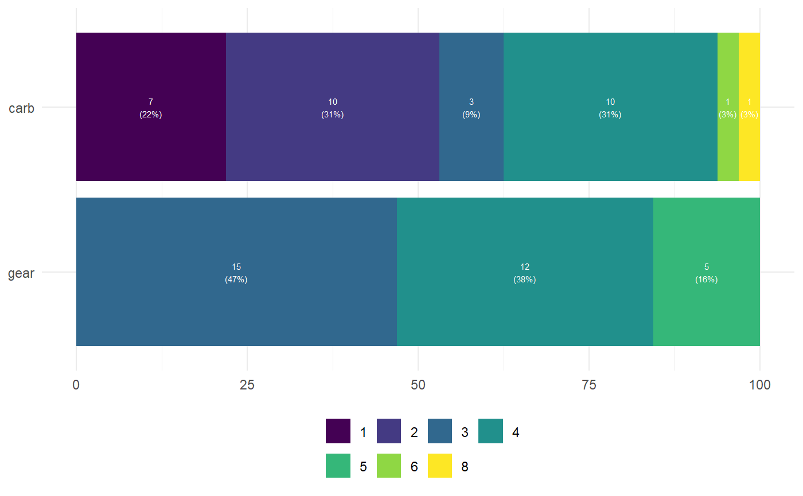
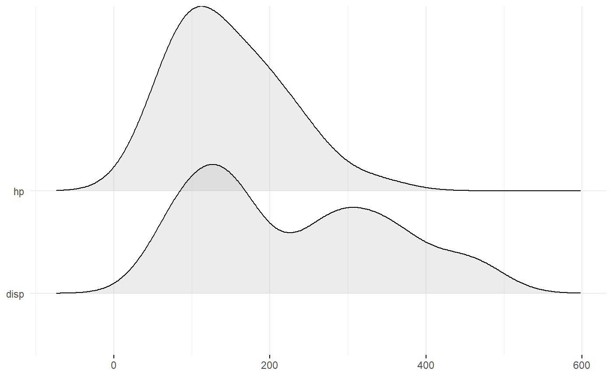
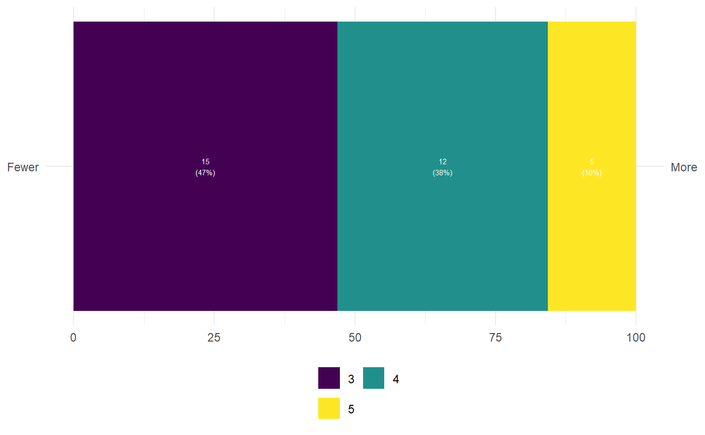
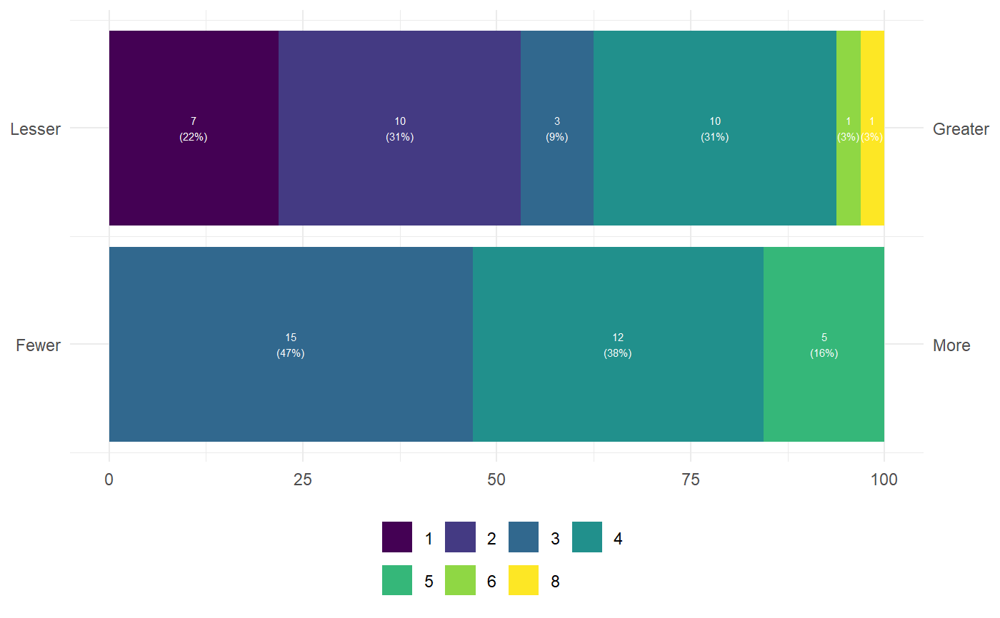

ggEasyPlots.RdThese are convenience functions to quickly generate plots for multiple variables, with the variables in the y axis.
ggEasyBar(data, items = NULL, labels = NULL, sortByMean = TRUE, xlab = NULL, ylab = NULL, scale_fill_function = NULL, fontColor = "white", fontSize = 2, labelMinPercentage = 1, showInLegend = "both", legendRows = 2, legendValueLabels = NULL, biAxisLabels = NULL) ggEasyRidge(data, items = NULL, labels = NULL, sortByMean = TRUE, xlab = NULL, ylab = NULL)
| data | The dataframe containing the variables. |
|---|---|
| items | The variable names (if not provided, all variables will be used). |
| labels | Labels can optionally be provided; if they are, these will be used instead of the variable names. |
| sortByMean | Whether to sort the variables by mean value. |
| xlab, ylab | The labels for the x and y axes. |
| scale_fill_function | The function to pass to |
| fontColor, fontSize | The color and size of the font used to display the labels |
| labelMinPercentage | The minimum percentage that a category must reach before the label is printed (in whole percentages, i.e., on a scale from 0 to 100). |
| showInLegend | What to show in the legend in addition to the values;
nothing (" |
| legendRows | Number or rows in the legend. |
| legendValueLabels | Labels to use in the legend; must be a vector of the same length as the number of categories in the variables. |
| biAxisLabels | This can be used to specify labels to use if you want to
use labels on both the left and right side. This is mostly useful when
plotting single questions or semantic differentials. This must be a list
with two character vectors, |
A ggplot() plot is returned.
geom_ridgeline(), geom_bar()
#>### When plotting single questions, if you want to show the anchors: ggEasyBar(mtcars, c('gear'), biAxisLabels=list(leftAnchors="Fewer", rightAnchors="More"));### Or for multiple questions (for e.g. semantic differentials): ggEasyBar(mtcars, c('gear', 'carb'), biAxisLabels=list(leftAnchors=c("Fewer", "Lesser"), rightAnchors=c("More", "Greater")));